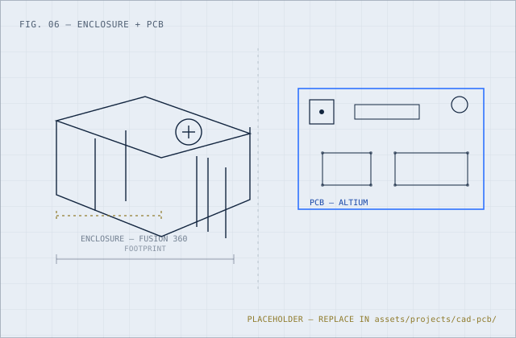

Skills in practice · CAD + PCB
CAD & PCB Practice
This page is less a project than a look at one skill area: mechanical CAD and board-level PCB work. I earned an Autodesk Certified Associate credential in mechanical CAD in 2023, and the most real test of it so far has been SaveIt — designing its enclosure in Fusion 360 and verifying its PCB in Altium.

- Credential
- Autodesk Certified Associate
CAD for Mechanical Design · 2023 - Applied on
- SaveIt
Enclosure + PCB verification - Tools
- Fusion 360
Altium - Status
- Active skill area
Growing with each project
How I got here
A credential, then a real board.
I earned my Autodesk Certified Associate credential in mechanical CAD design in 2023, working through Fusion 360’s sketch, assembly, and drawing workflows. Coursework and the credential gave me the fundamentals; SaveIt is where I actually had to use them against a real set of constraints — a manikin to fit around, sensors to route, and a board someone else was laying out at the same time.
What I actually did
Enclosure to schematic.
On the mechanical side, I designed SaveIt’s AED-like enclosure in Fusion 360: translating the training workflow into a physical layout, deciding where the manikin connects and where the electronics sit, and iterating on a shape a trainer could actually open and use.
On the board side, I wasn’t the primary PCB designer, but I verified and assisted with the PCB design in Altium — checking that the board’s components and interfaces actually matched what the embedded software expected, before it went anywhere near a soldering iron. That verification role is what taught me to read a schematic critically instead of just trusting that it matches the firmware.
Where this goes next
Still building this skill set.
I’m not going to inflate this into more than it is: right now, my board-level experience comes from verification and assistance, not from leading a PCB layout end to end. That’s the honest state of it today, and it’s the direction I want to keep pushing — more layout work, not just review.